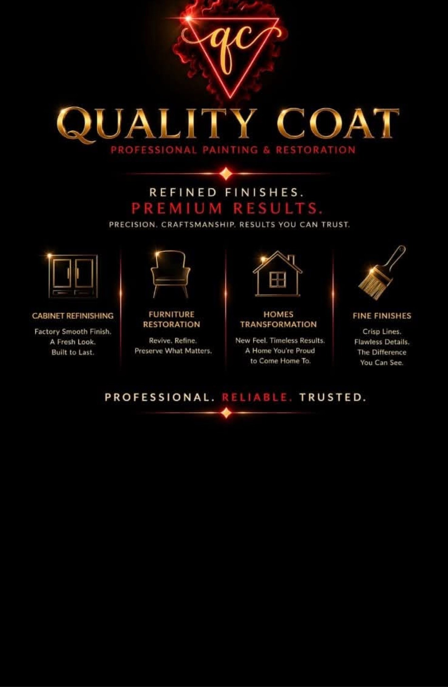

Professional Painting & Restoration
Refined finishes, crafted
to a flawless standard.
Extremely smooth finishes, factory style coatings, and meticulous preparation for homes and businesses across Southwest Florida.
View Our WorkPainting & Finishing
A Finish You Can Feel
Interior and exterior painting built on careful preparation and professional coating systems that hold up beautifully in the Florida sun.
Great paint work starts long before the first coat. We repair, sand, mask, and prime every surface so the finish goes on even, stays crisp, and lasts.
From single rooms to full exteriors, every line is sharp and every surface is smooth to the touch.
- Residential & commercial painting, interior and exterior
- Drywall repair with seamless texture matching
- Level 5 smooth wall finishes
- Durable professional coating systems
Cabinet & Furniture Refinishing
Factory Style, Without the Replacement
Cabinets and furniture refinished to an extremely smooth, high gloss standard that looks and feels brand new.
Tired cabinets and well loved furniture get a full restoration: deep cleaning, careful prep, and sprayed finishes laid on glass smooth.
The result is a factory style finish at a fraction of the cost and mess of replacement, built for daily life.
- Cabinetry restoration and refinishing
- Furniture restoration and refinishing
- Wood staining and varnish
- High gloss and factory style finishes
Specialty Coatings
Coatings That Work as Hard as They Look
Custom and protective coating systems for surfaces that take a beating, indoors and out.
We match the coating to the surface and the job. Epoxy floors, sealed pavers, and protected metal, each system chosen for durability and finished with the same smooth, even hand.
- Epoxy floors and countertops
- Concrete and paver sealing, plus waterproofing
- Metal coatings
- Custom coatings for unique surfaces
Remodeling & Home Improvements
One Team, Start to Finish
Kitchens, baths, and whole home improvements handled with a finisher's eye for detail from demolition to final coat.
Because we are finishers first, our remodeling work ends where cheap remodels fall apart: crisp trim, clean caulk lines, and surfaces that look intentional.
Tile, molding, fixtures, and repairs, coordinated by one accountable team.
- Kitchen, bath, and home remodeling
- Tile and backsplash installation
- Crown molding and baseboards
- Appliance, hardware, and fixture installation
- General home repairs
Our Work
Proof, Not Promises
Drag the handle on any photo to compare before and after. Then browse the full gallery to see every project, start to finish.

Why Quality Coat
Craftsmanship You Can Measure
We handle a wide range of work, and we are known for one thing above all: exceptional finishing quality.
-
Technical Knowledge
Every coating system has a right way to be applied. We know the products, the prep, and the conditions that make a finish last, and we never cut corners on any of them.
-
Attention to Detail
Crisp lines, even sheen, invisible repairs. The small things are the whole job, and we finish every one of them as if the light will hit it at an angle.
-
Professional Presentation
Clean job sites, clear communication, and a team that treats your home like it matters. You will always know what is happening and what comes next.
-
Preparation First
Sanding, masking, priming, repairing. Meticulous preparation is what separates a finish that lasts from one that fails, and it is where we spend our time.
-
Finishing Expertise
Extremely smooth finishes, Level 5 finish work, high gloss and factory style finishes, custom coatings, staining and varnish, and full restoration. Durable professional coating systems, applied with a steady hand.
-
One Standard, Every Project
From a single piece of furniture to a full remodel, the standard never changes. Wide ranging capability, one reputation: craftsmanship you can see and feel.
Service Area
Proudly Serving Southwest Florida
Residential and commercial work, done right.
- Cape Coral
- Fort Myers
- Naples
- Punta Gorda
Contact / Estimate
Ready for a Flawless Finish?
Call now or request an estimate. We will take it from there.
239-222-1439